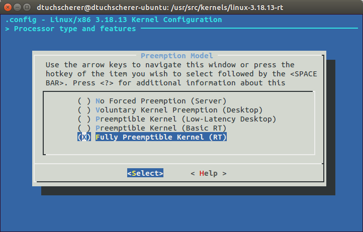

Enable real-time capabilities of the mainline kernel on the Raspberry PI
Embedded systems often need hard realtime capabilities for driving actuators or reading out sensor data at a given time. This guideline shows how to apply the realtime kernel from OSADL on a Raspberry PI (RPI) v2. We will go through downloading the sources, cross-compiling the kernel on a PC architecture and finally flashing it on the RPI.
I'm cross-compiling the kernel on an Intel i7 with 8 GB of RAM in Ubuntu as my host system, because it will compile a lot faster than compiling the kernel on the RPI itself.
Downloading and Patching
Check the kernel version of your RPI:
uname -r
# ...
Download both the kernel as well as the corresponding RT patch. We will work with kernel version 3.18.11:
cd /usr/src/kernels
sudo wget https://www.kernel.org/pub/linux/kernel/v3.x/linux-3.18.11.tar.xz
sudo wget https://www.kernel.org/pub/linux/kernel/projects/rt/3.18/older/patch-3.18.11-rt7.patch.xz
If directory kernels does not exist create it:
cd /usr/src/
mkdir kernels
Unpack the kernel:
sudo tar -xvJf linux-3.18.11.tar.xz
Rename the kernel directory:
sudo mv linux-3.18.11 linux-3.18.11-rt
Change the directory into the unpacked kernel and patch it with the RT PREEMPT patch.
sudo -i
cd /usr/src/kernels/linux-3.18.11-rt/
sudo xz -dc /usr/src/kernels/patch-3.18.11-rt7.patch.xz | patch -p1
Cross-Compiler
There are more than one ARM cross compilers for Ubuntu Linux. We will use the provided compiler from the Raspberry Pi tools section on GitHub.
cd /opt/
git clone git://github.com/raspberrypi/tools.git --depth 1
Configuration
Before you are able to configure the kernel make sure you installed all necessary dependencies:
sudo apt-get install libncurses5-dev
We also need to copy the kernel .config file from the RPI into the build directory. First we back up our default config. Then we will transfer the RPI .config from the embedded device onto the PC.
sudo mv .config .config_backup
sudo rsync -avz -e ssh pi@141.7.25.81:/proc/config.gz /usr/src/kernels/linux-3.18.11-rt/.config
Set an environment variable for the prefix of the cross compiler toolchain:
export CCPREFIX=/opt/rpi-tools/arm-bcm2708/gcc-linaro-arm-linux-gnueabihf-raspbian-x64/bin/arm-linux-gnueabihf-
In the same terminal where you exported the environment variable run your first make command to configure your kernel:
sudo make ARCH=arm CROSS_COMPILE=${CCPREFIX} menuconfig
This make target will start up a graphical interface shown below.

For PC architectures the realtime settings are under Processor type and features. Select the Preemption Model and choose Fully Preemptible Kernel (RT) like in the screenshot below: 
If you configured the ARM build correctly the Preemption Model of the PREEMPT patch can be found under Kernel Features and then Preemption Model like shown in the following image:

Also choose Fully Preemptible Kernel (RT).
Note: If this option is not available the patch was not successful and something went completly wrong. Try to patch the downloaded kernel once again.
You can now compile the kernel on the PC. If you are working on a multi-processor platform enable parallel jobs for a quicker build switching on -j #n where #n is the number of parallel jobs that will be used. This should be 1.5 times your number of cores. Using this option makes the build about 48% faster on a modern Intel/AMD processor.
sudo make ARCH=arm CROSS_COMPILE=${CCPREFIX} -j5
Now you can imagine how long it would take to compile the kernel directly on the RPI itself (more than 3 hrs I guess), by only enabling the parallel jobs.